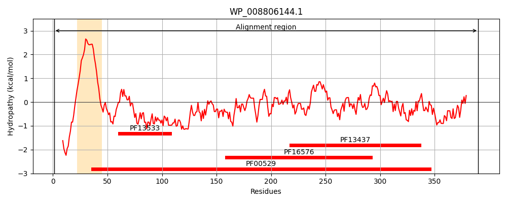
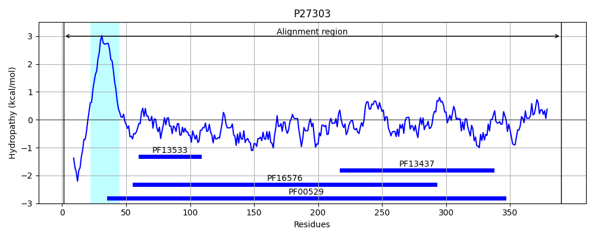
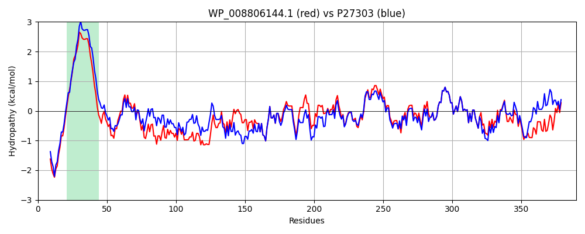

Hit Accession: P27303
Hit TCID: 8.A.1.1.1
Hit Description: gnl|BL_ORD_ID|9614 gnl|TC-DB|P27303|8.A.1.1.1 MULTIDRUG RESISTANCE PROTEIN A - Escherichia coli.
Mach Len: 390
e:0.000000
Query TMS Count : 1
Hit TMS Count: 1
TMS-Overlap Score: 1.200000
Predicted Substrates:None
BLAST Alignment:
Score: 1645 , Bit scores: 638 bits, E-value: 0.0e+00, Alignment length: 390, Percentage identity: 82
Query: 1 MSANAESQTPQQPGSKKGKRKGALLLLTLLFIIIAVAYGIYWFLVLRHYEETDDAYVAGNQVQIMAQVSGSVTKVWADNTDYVQKGDPLVTLDQTDAQQAFEKAKTQLAASVRQTRQQMINSKQLQANIDVKKTALAQAQADLNRRIPLGAANLIGREELQHARDTVASAQAELDVAIQQYNANQAIVLGTKLEQQPAVLQAATEVRNAWLALQRTQIVSPISGYVSRRSVQPGAQIGTTTPLMAVVPATNLWIDANFKETQLAHMRIGQPATVISDIYGDDVKYTGKVVGLDMGTGSAFSLLPAQNATGNWIKVVQRLPVRIELDEKQLAEHPLRIGLSTLVEVNTTDRDGEMLASQVRSSPVYESNAREIALEPVNKLIDEIIQANAG 390
MSANAE+QTPQQP K GKRK LLLLTLLFIIIAVA GIYWFLVLRH+EETDDAYVAGNQ+QIM+QVSGSVTKVWADNTD+V++GD LVTLD TDA+QAFEKAKT LA+SVRQT Q MINSKQLQANI+V+K ALA+AQ+D NRR+PLG ANLIGREELQHARD V SAQA+LDVAIQQYNANQA++LGTKLE QPAV QAATEVRNAWLAL+RT+I+SP++GYVSRR+VQPGAQI TTPLMAVVPATN+W+DANFKETQ+A+MRIGQP T+ +DIYGDDVKYTGKVVGLDMGTGSAFSLLPAQNATGNWIKVVQRLPVRIELD+KQL ++PLRIGLSTLV VNTT+RDG++LA++VRS+PV S AREI+L PVNKLID+I++ANAG
Sbjct: 1 MSANAETQTPQQPVKKSGKRKRLLLLLTLLFIIIAVAIGIYWFLVLRHFEETDDAYVAGNQIQIMSQVSGSVTKVWADNTDFVKEGDVLVTLDPTDARQAFEKAKTALASSVRQTHQLMINSKQLQANIEVQKIALAKAQSDYNRRVPLGNANLIGREELQHARDAVTSAQAQLDVAIQQYNANQAMILGTKLEDQPAVQQAATEVRNAWLALERTRIISPMTGYVSRRAVQPGAQISPTTPLMAVVPATNMWVDANFKETQIANMRIGQPVTITTDIYGDDVKYTGKVVGLDMGTGSAFSLLPAQNATGNWIKVVQRLPVRIELDQKQLEQYPLRIGLSTLVSVNTTNRDGQVLANKVRSTPVAVSTAREISLAPVNKLIDDIVKANAG 390 | Protein Hydropathy Plots: |
|---|
|  |  |
Pairwise Alignment-Hydropathy Plot:
|
|---|
|  |